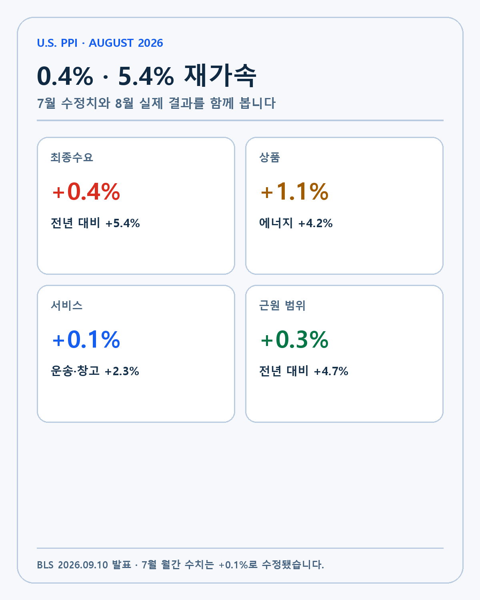
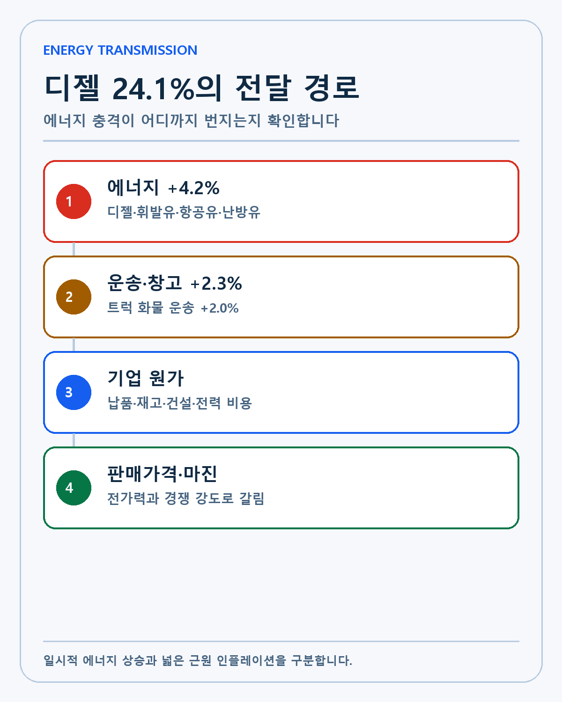
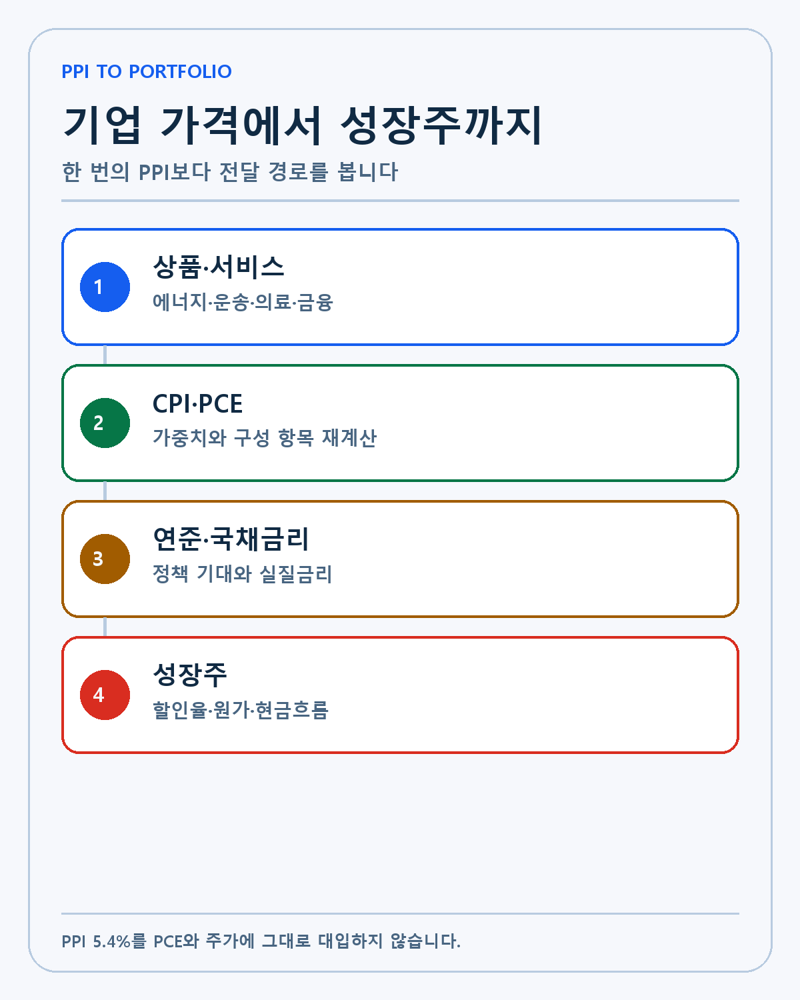
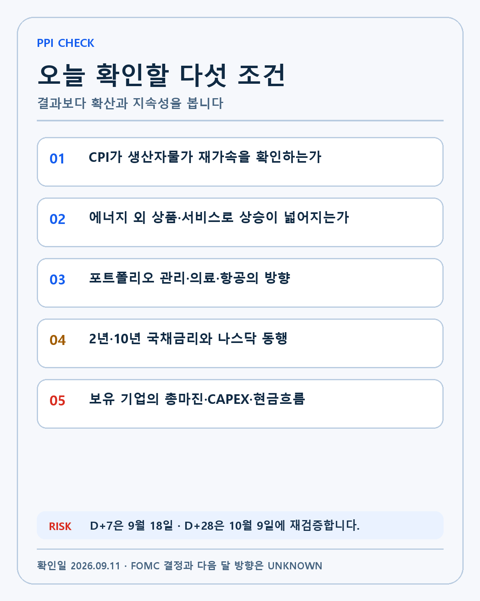

U.S. PPI · DEEP RESEARCH
미국 8월 PPI 5.4% 분석: 에너지 충격과 성장주 할인율을 분리하는 방법
8월 PPI 0.4%·5.4% 재가속을 상품·에너지·서비스·PCE·국채금리와 기업 현금흐름으로 나눠 분석합니다.
2026년 8월 미국 생산자물가지수(PPI)는 전월 대비 0.4%, 전년 대비 5.4% 상승했습니다. 7월의 수정치인 전월 0.1%, 전년 4.8%보다 모두 높습니다. 결과만 놓고 보면 생산자 단계의 물가가 다시 빨라졌습니다.
하지만 투자 판단에 필요한 질문은 ‘5.4%가 높으냐’에서 끝나지 않습니다. 최종수요 상품은 1.1% 올랐고 서비스는 0.1% 상승했습니다. 상품 안에서는 에너지가 4.2%, 디젤이 24.1% 뛰었습니다. 같은 0.4%의 헤드라인이라도 모든 품목이 넓게 오른 경우와 에너지 한 축이 끌어올린 경우는 지속성이 다릅니다.
이 글은 미국 노동부의 8월 PPI 원문을 기준으로 발표치와 수정치, 상품·서비스 구성, PCE 연결 항목, 성장주 할인율까지 단계별로 분석합니다. 확인된 수치와 제 해석, 아직 알 수 없는 부분을 분리하겠습니다.
먼저 고쳐야 할 기준선이 있습니다
8월 발표에는 7월 수정치가 함께 들어 있습니다. 7월 최종수요 PPI는 처음 전월 0.0%, 전년 4.7%로 발표됐지만 이번 자료에서는 0.1%와 4.8%로 바뀌었습니다. 통계는 조사표가 늦게 들어오거나 응답이 수정되면 이전 값이 달라질 수 있습니다.
| 지표 | 7월 최초 공개 | 8월 발표의 7월 수정치 | 8월 실제 |
|---|---|---|---|
| 최종수요 전월 대비 | 0.0% | +0.1% | +0.4% |
| 최종수요 전년 대비 | +4.7% | +4.8% | +5.4% |
| 상품 전월 대비 | -0.7% | -0.4% | +1.1% |
| 서비스 전월 대비 | +0.2% | +0.2% | +0.1% |
| 식품·에너지·무역서비스 제외 | +0.4% | +0.4% | +0.3% |

수정 폭이 작다고 무시할 일은 아닙니다. 발표 전 시장 예상과 실제를 비교할 때 기준선이 달라지고, 최근 3개월 연율을 계산할 때도 결과가 달라집니다. 블로그에 경제지표를 기록할 때는 발표 당일 숫자와 나중에 수정된 숫자를 함께 남기는 편이 정확합니다.
이번 8월 결과의 첫 해석은 단순합니다. 헤드라인 상승 속도는 빨라졌습니다. 두 번째 해석은 더 중요합니다. 그 재가속은 서비스보다 상품, 상품 중에서도 에너지의 영향이 컸습니다. 이 두 문장을 같이 놓아야 과장도 축소도 피할 수 있습니다.
최종수요 PPI는 무엇을 재는가
PPI는 미국 생산자가 상품과 서비스를 판매할 때 받는 가격의 평균 변화를 측정합니다. 소비자가 매장에서 지불하는 가격을 보는 CPI와 관찰 지점이 다릅니다. 원재료에서 중간재, 물류와 도매를 거쳐 소비자에게 전달되는 가격 경로의 앞부분에 가깝습니다.
최종수요라는 말은 생산 과정의 마지막 단계에 판매되는 상품·서비스를 묶는다는 뜻입니다. 개인 소비, 기업의 자본투자, 정부 구매와 수출에 들어가는 가격을 포함합니다. 중간수요 지수는 다른 생산 과정에 다시 투입되는 가공품과 원재료, 서비스를 추적합니다.
PPI가 CPI보다 먼저 발표된다고 해서 언제나 CPI의 선행지표가 되는 것은 아닙니다. 가중치와 조사 대상이 다르고, 기업이 원가 상승을 마진에서 흡수할 수도 있습니다. 판매가격으로 전가하는 속도 역시 산업과 경쟁 강도에 따라 달라집니다. 따라서 PPI의 상승을 CPI의 같은 폭 상승으로 복사하면 안 됩니다.
8월 상승의 중심은 에너지였습니다
최종수요 상품 가격은 8월에 1.1% 올랐습니다. 두 달 연속 하락한 뒤 반등했습니다. 에너지 가격은 4.2% 상승했고 상품 전체 상승의 4분의 3 이상을 설명했습니다. 식품은 0.1%, 식품과 에너지를 제외한 상품은 0.4% 올랐습니다.
세부 품목에서는 디젤이 24.1% 뛰었습니다. 휘발유, 항공유, 난방유도 상승했습니다. AP의 8월 PPI 보도는 중동 충돌과 높은 원유 가격을 주요 배경으로 설명했습니다. 지정학적 사건과 원유 공급은 PPI 밖의 변수이므로 다음 달에도 같은 방향이 이어진다고 가정할 수 없습니다.

디젤이 중요한 이유는 소비자의 주유비에 그치지 않기 때문입니다. 장거리 화물 운송, 건설 장비, 농업과 일부 산업 설비에 쓰입니다. 연료비가 오르면 운송업체가 받는 요금과 제조업체의 납품비, 유통업체의 재고 비용으로 번질 수 있습니다.
실제로 운송·창고 서비스는 2.3%, 트럭 화물 운송은 2.0% 올랐습니다. 한 달의 동행만으로 인과를 확정할 수는 없지만 에너지 충격이 물류 서비스에 함께 나타난 것은 확인할 가치가 있습니다. 다음 달에 디젤이 안정돼도 운송 단가가 유지되는지 보면 가격 전가의 지속성을 판단할 수 있습니다.
서비스 0.1% 안에서도 방향이 갈렸습니다
최종수요 서비스는 0.1% 올랐습니다. 전체 숫자만 보면 상품보다 안정적입니다. 그러나 운송·창고 서비스는 2.3% 상승했고 무역서비스는 0.2% 하락했습니다. 무역과 운송·창고를 제외한 서비스는 0.7% 올랐습니다.
무역서비스 지수는 도매·소매업체가 받는 마진의 변화를 측정합니다. 제품 자체 가격과 같은 개념이 아닙니다. 연료·윤활유 소매 마진은 11.3% 내렸고 일부 도매·소매 마진도 하락했습니다. 이런 감소가 운송과 기타 서비스 상승을 상쇄하면서 서비스 전체가 0.1%에 머물렀습니다.
서비스 안의 상쇄 관계를 보면 ‘서비스 물가가 안정됐다’는 단정이 왜 위험한지 알 수 있습니다. 총합은 작지만 내부에는 2.3% 상승과 0.2% 하락, 0.7% 상승이 함께 있습니다. 투자자는 총지수와 구성 지수를 나눠 봐야 합니다.
근원 지표의 정의를 통일해야 합니다
BLS가 강조한 식품·에너지·무역서비스 제외 PPI는 전월 대비 0.3%, 전년 대비 4.7% 상승했습니다. 월간 속도는 7월 0.4%보다 낮아졌지만 연간 상승률은 4.7%입니다. 에너지를 빼도 기초적인 생산자 가격 압력이 낮다고 부르기 어렵습니다.
언론이 ‘근원 PPI’라고 부르는 수치는 다를 수 있습니다. AP는 식품과 에너지만 제외한 지표가 전월 0.2%, 전년 4.6% 올랐다고 보도했습니다. 여기에 무역서비스를 추가로 제외하면 BLS의 0.3%·4.7%가 됩니다. 숫자를 인용할 때 제외 항목을 같이 써야 비교가 맞습니다.
저는 발표를 기록할 때 세 줄을 고정하겠습니다. 전체 최종수요, 식품·에너지 제외, 식품·에너지·무역서비스 제외입니다. 각 지표가 같은 방향이면 신호가 선명하고, 엇갈리면 어느 구성 항목이 차이를 만들었는지 확인합니다.
PPI가 PCE로 연결되는 방식
연준은 물가 목표를 평가할 때 개인소비지출(PCE) 물가지수를 중시합니다. PCE 계산에는 PPI의 일부 서비스 가격이 활용됩니다. 포트폴리오 관리, 의료 서비스, 항공료 같은 항목이 대표적입니다.
8월에는 항공료와 병원 입원 서비스가 올랐고 포트폴리오 관리 서비스는 내렸습니다. AP는 포트폴리오 관리가 1.6% 하락했다고 전했습니다. 이 때문에 PPI 헤드라인 5.4%가 PCE의 같은 방향·같은 크기 상승을 뜻하지 않습니다.

PCE로 가는 경로를 계산하려면 세부 항목의 변화와 PCE 가중치, CPI에서 가져오는 다른 자료를 함께 봐야 합니다. 이후 소비자물가와 소매판매, 임금과 주거비도 확인해야 합니다. 이번 PPI는 중요한 입력값이지 최종 출력이 아닙니다.
성장주 할인율은 어떻게 반응하는가
주식의 현재 가치는 미래 현금흐름을 할인해 계산합니다. 물가가 오래 높으면 시장은 정책금리와 국채금리가 더 높은 수준에 머물 가능성을 반영합니다. 할인율이 올라가면 먼 미래 이익의 현재 가치는 더 크게 줄어듭니다.
엔비디아처럼 이미 큰 현금흐름을 만드는 기업과 아이온큐·로켓랩처럼 미래 성장이 가치의 큰 부분을 차지하는 기업은 같은 금리 충격을 다르게 받을 수 있습니다. 팔란티어처럼 높은 성장과 현금창출을 동시에 보여주는 기업도 밸류에이션 배수가 높으면 할인율 변화에 민감합니다.
이 관계는 기계적인 하루짜리 공식이 아닙니다. 높은 PPI가 나와도 기업 실적이 예상보다 훨씬 강하면 주가는 오를 수 있습니다. 반대로 낮은 PPI가 나와도 성장 가이던스가 꺾이면 주가는 내릴 수 있습니다. 매크로는 기업 펀더멘털 위에 적용되는 가격 변수로 봐야 합니다.
비용 경로는 기업별 해자를 시험합니다
AI 데이터센터는 전력과 냉각, 서버와 네트워크, 건설과 물류가 필요합니다. 반도체 공장은 장비와 화학재료, 전력과 정밀 물류를 씁니다. 우주 기업은 추진제와 복합재, 운송과 발사 시설을 운영합니다. 에너지와 운송 비용이 지속되면 프로젝트 원가가 올라갑니다.
이때 기술 해자와 가격 결정력이 드러납니다. 고객이 꼭 필요로 하는 제품을 독점에 가깝게 공급하면 비용 일부를 가격에 반영할 수 있습니다. 경쟁이 치열하고 대체재가 많으면 기업이 마진에서 흡수할 가능성이 큽니다.
현금흐름도 중요합니다. 비용 상승과 높은 금리가 동시에 오면 외부 자금이 필요한 기업의 부담이 커집니다. 이미 영업현금흐름과 잉여현금흐름을 만드는 기업은 투자 속도를 유지할 여지가 있습니다. 같은 성장주라는 분류만으로 위험을 묶지 않겠습니다.
세 가지 시나리오로 나눠보겠습니다
강세 시나리오는 PPI 상승이 에너지에 머물고, CPI의 주거비·근원 서비스가 둔화하는 경우입니다. 다음 달 디젤과 운송비가 안정되면 일시적 공급 충격이라는 설명이 강해집니다. 금리 상승 압력도 완화될 수 있습니다.
기준 시나리오는 에너지와 운송이 높지만 다른 상품·서비스로 확산되지 않는 경우입니다. 연준은 한 번의 수치보다 유가와 고용, 다음 PCE를 더 확인할 수 있습니다. 성장주의 단기 변동성은 커져도 기업별 실적이 다시 중심이 됩니다.
약세 시나리오는 에너지 외 상품과 서비스까지 상승 폭이 넓어지고 CPI·PCE가 같은 방향을 확인하는 경우입니다. 고금리 지속 가능성과 기업 비용이 함께 올라갑니다. 밸류에이션이 높고 현금창출이 약한 기업이 더 큰 압력을 받을 수 있습니다.
예상 대비와 절대 수준을 분리해야 합니다
경제지표 발표 뒤 시장은 예상치와 실제의 차이에 먼저 반응합니다. 전월 0.4%가 컨센서스와 같았더라도 절대 수준이 낮다는 뜻은 아닙니다. 전년 5.4%와 근원 범위의 4.7%는 생산자 가격 압력이 여전히 높다는 신호입니다.
예상치는 여러 기관의 전망을 모은 중앙값이고 정답이 아닙니다. 발표 전에 자산 가격에 어느 정도 반영될 수 있으며, 투자자 포지션이 한쪽으로 쏠렸다면 예상과 같은 결과에도 큰 변동이 나올 수 있습니다. 결과를 해석할 때는 ‘예상보다 높다·낮다’와 ‘경제적으로 높은 수준이다·낮은 수준이다’를 따로 적어야 합니다.
이전 달 수정치도 새 정보입니다. 7월 월간 상승률이 0.0%에서 0.1%로 바뀌면서 8월 0.4%와 비교할 기준이 조금 높아졌습니다. 한 달 숫자만 보면 변화가 작지만 3개월 연율과 누적 추세를 계산하면 차이가 커질 수 있습니다.
국채금리에서 확인할 세 가지
첫째는 2년물과 10년물의 방향입니다. 2년물은 다음 몇 차례 FOMC의 정책금리 기대에 민감하고, 10년물은 장기 물가와 성장, 국채 공급과 기간 프리미엄의 영향을 함께 받습니다. 두 금리가 같이 오르면 물가·정책 부담의 해석이 강해질 수 있습니다.
둘째는 발표 직후와 종가의 차이입니다. 알고리즘 거래가 헤드라인을 읽고 움직인 뒤 세부표와 다른 지표가 반영되면 방향이 되돌아갈 수 있습니다. 첫 1분의 움직임을 경제의 최종 판단으로 기록하지 않겠습니다.
셋째는 실질금리입니다. 명목금리에서 기대인플레이션을 뺀 실질금리가 오르면 미래 현금흐름의 현재 가치에 직접 부담이 됩니다. 명목금리가 올라도 기대인플레이션이 같이 오르면 해석이 달라집니다. 성장주 배수를 볼 때는 명목 10년물 하나만 보지 않겠습니다.
기업 손익으로 옮길 때의 계산 순서
PPI에서 기업 실적으로 넘어갈 때는 가격, 물량, 마진, 현금 순서로 봅니다. 기업이 판매가격을 올려 매출이 증가했는지, 실제 고객 수요와 판매량이 늘었는지 구분합니다. 명목 매출 성장률이 높아도 물량이 줄면 경쟁력의 신호가 약할 수 있습니다.
다음은 총마진입니다. 원가 상승을 고객에게 모두 전가하면 마진을 지킬 수 있지만 경쟁이 치열하면 기업이 일부를 흡수합니다. 매출총이익률의 변화와 경영진의 가격·비용 설명을 함께 봅니다.
마지막은 현금흐름입니다. 높은 금리와 비용이 함께 오르면 재고와 매입채무, CAPEX와 이자비용이 현금을 압박할 수 있습니다. 회계상 이익이 유지돼도 영업현금흐름과 잉여현금흐름이 약해진다면 투자 여력이 줄어듭니다. 기술 경쟁력을 장기 해자로 유지하려면 연구개발과 생산능력 투자를 감당할 현금이 필요합니다.
앞으로 기록할 확인표입니다
- CPI의 전체·근원·주거·서비스 항목을 PPI와 분리해 기록합니다.
- 2년물과 10년물 국채금리가 발표 직후뿐 아니라 종가까지 같은 방향인지 확인합니다.
- 디젤·원유와 운송·창고 가격의 동행이 다음 달에도 이어지는지 봅니다.
- PCE 연결 서비스인 포트폴리오 관리·의료·항공을 따로 추적합니다.
- 보유 기업의 총마진·CAPEX·현금흐름·가격 전가 설명이 바뀌는지 확인합니다.

다음 확인일은 9월 18일과 10월 9일입니다. D+7에는 CPI와 FOMC, 국채금리 반응을 묶어 봅니다. D+28에는 유가 충격이 얼마나 남았고 기업 가격으로 얼마나 번졌는지 확인합니다. 이후 10월 15일 발표되는 9월 PPI에서 가설을 다시 검증합니다.
결론
8월 PPI는 전월 0.4%, 전년 5.4%로 재가속했습니다. 상품 1.1%와 에너지 4.2%, 디젤 24.1%가 상승의 중심이었습니다. 서비스는 0.1%였지만 내부에서는 운송·창고 2.3%와 기타 서비스 0.7%가 올랐습니다. 식품·에너지·무역서비스 제외 수치도 전년 4.7%로 높습니다.
따라서 이번 결과를 ‘에너지뿐’이라고 축소하거나 ‘모든 물가가 폭발했다’고 확대하지 않겠습니다. 확인된 것은 생산자 가격 압력이 높아졌다는 사실입니다. 아직 모르는 것은 이 충격이 얼마나 오래가고 CPI·PCE와 기업 마진으로 얼마나 전달되는지입니다.
저의 장기 투자 기준은 기술, 해자, 창업자와 경영진, 성장률, 현금흐름입니다. PPI는 이 기준을 바꾸는 사건이 아니라 기업 가치에 적용하는 할인율과 비용 환경을 갱신하는 자료입니다. 같은 수치를 모든 종목에 똑같이 적용하지 않고 기업별 가격 결정력과 재무 구조를 확인하겠습니다.
이 글은 개인 투자 기록이며 특정 종목의 매수·매도를 권유하지 않습니다. 경제지표는 수정될 수 있고 시장 가격에는 여러 요인이 동시에 영향을 줍니다. 모든 투자 판단과 책임은 투자자 본인에게 있습니다.
작성 방법
2026년 9월 11일 기준 공식 자료와 공시를 우선하고 실제·회사 전망·시나리오·UNKNOWN을 분리했습니다.
개인 투자 기록이며 특정 종목의 매수·매도를 권유하지 않습니다.